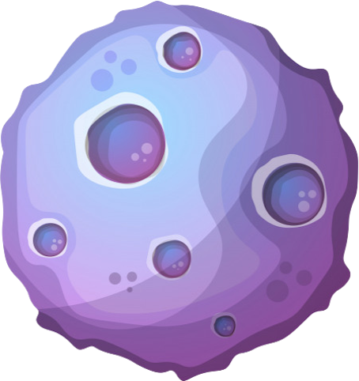
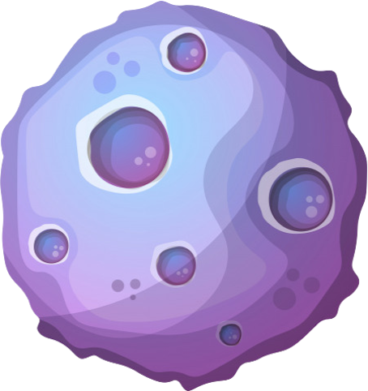
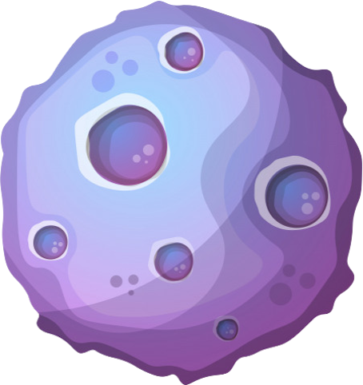

Zone des balises
Zone de compilation des balises
Bienvenue sur Apollo, le jeu qui vous permettera d'apprendre l'algorithmie de manière amusante et ludique! Vous utiliserez des balises dont le fonctionnement vous sera expliqué au fur et à mesure de votre avancement dans le jeu.
